|
|
Home | About | Reviews | Articles | Contact |
| Madrid is the capital and most populous city of Spain. The city has almost 3.4 million inhabitants and a metropolitan area population of approximately 6.7 million. It is the second-largest city in the European Union (EU), surpassed only by Berlin in its administrative limits, and its monocentric metropolitan area is the second-largest in the EU, surpassed only by Paris. Madrid lies on the River Manzanares in the central part of the Iberian Peninsula. Capital city of both Spain (almost without interruption since 1561) and the surrounding autonomous community of Madrid (since 1983),it is also the political, economic and cultural centre of the country. |
 |
Madrid lies in the centre of the Iberian peninsula on the southern Meseta Central, 60 km south of the Guadarrama mountain range and straddling the Jarama and Manzanares river sub-drainage basins, in the wider Tagus River catchment area. Madrid has a Mediterranean climate with continental influences in the western half of the city transitioning to a semi-arid climate. Little medieval architecture is preserved in Madrid, mostly in the Almendra Central, including the San Nicolás and San Pedro el Viejo church towers, the church of San Jerónimo el Real, and the Bishop's Chapel. Nor has Madrid retained much Renaissance architecture, other than the Bridge of Segovia and the Convent of Las Descalzas Reales. Madrid is the seat of the World Tourism Organization (UNWTO) and the International Tourism FairThe most visited museum was the Museo Nacional Centro de Arte Reina Sofía, with 3.8 million visitors in the sum of its three seats in 2018. Conversely, the Prado Museum had 2.8 million visitors and the Thyssen-Bornemisza Museum 906,815 visitors.By the late 2010s, the gentrification and the spike of tourist apartments in the city centre led to an increase in rental prices, pushing residents out of the city centre. Most of the tourist apartments in Madrid (50–54%) are located in the Centro District. In the Sol neighborhood (part of the latter district), 3 out of 10 homes are dedicated to tourist apartments, and 2 out of 10 are listed in AirBnB. |
|
Content: Culture & Tradition Best Places To Explore Live .Love .Eat Best Things To Do |

| 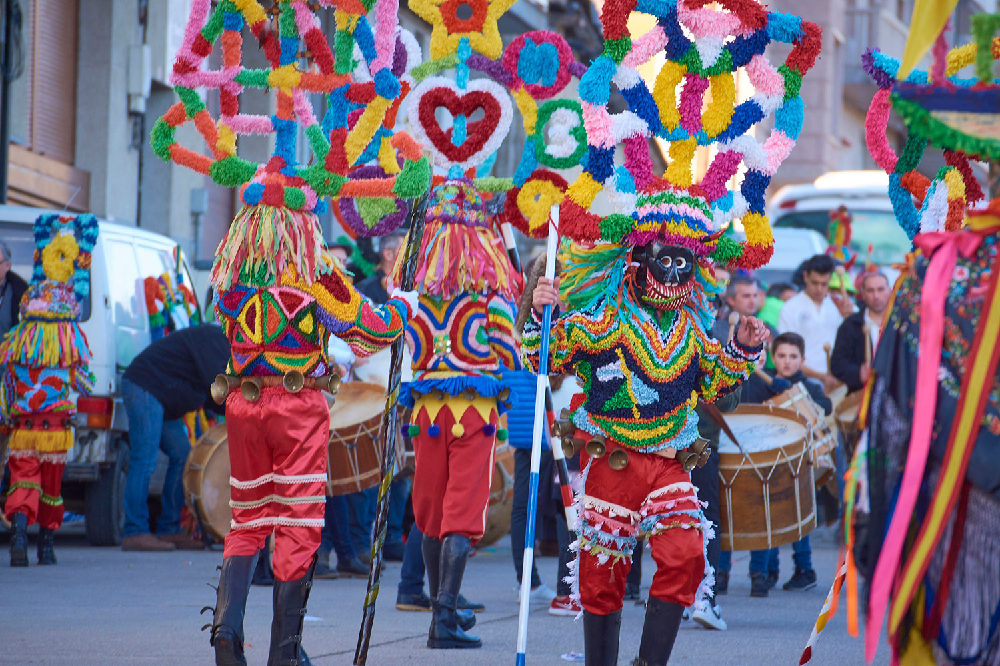 | Carnival celebrations draw to a close with the Burial of the Sardine, a tradition captured by Goya in one of his paintings. Costumes are put away, the fanfares fall silent and the humble fish is buried with honors to indicate that the time has come to wrap up the celebrations and get ready for Lent. The burial procession starts at Plaza de San Antonio de la Florida, goes along the bridge across the river Manzanares and winds its way along Paseo del Comandante Fortea, Calle Santa Comba, Calle del Doctor Casal and the M-30 underground passage (Check out the map). Finally, the sardine is buried in the Pajaritos Fountain at Plaza de las Moreras in Casa de Campo Park. An impressive bonfire closes the ceremony, as though driving away all evils and negative thoughts, with the ashes representing the happiness, peace and harmony that charaterise Madrileños. city’s most well-known traditions, and the Burial of the Sardine is a particularly popular event. As a tribute to the deceased sardine, for the past few years the city’s main bakeries, restaurants and markets have put on sale an original Carnival Sardine which you can purchase throughout the festivities. They come in all sizes and made from different ingredients, both sweet and savoury. |

| 1. Retiro Park | |
| The Buen Retiro Park, Retiro Park or simply El Retiro is one of the largest parks of the city of Madrid, Spain. The park belonged to the Spanish Monarchy until the late 19th century, when it became a public park.Madrid’s green heart and full of elegant gardens, the Retiro is just a few steps east from the Prado and was a royal property up to the end of the 19th century when it was opened to the public. If you’re visiting with little ones, paddling on the Grand Pond next to the monument of Alfonso XII is a fun option on a sunny afternoon. The iron and glass pavilion built to house the Philippine Exhibition in 1887 is magnificent and growing in the pond in front of it are bald cypresses, strange swamp trees that turn a lovely golden brown in summer. The oldest tree in the city is close by: It’s a Montezuma Cypress planted in 1633 and ringed by an iron fence. | 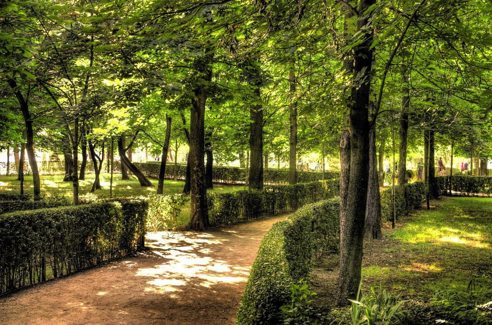 |
| 2. Royal Palace | |
| The Royal Palace of Madrid is the official residence of the Spanish royal family at the city of Madrid, although now used only for state ceremonies. The palace has 135,000 m² of floor space and contains 3,418 rooms. It is the largest functioning royal palace and the largest by floor area in Europe. Built in the mid-1700s for King Philip V the Royal Palace is on the site of Madrid’s Moorish Alcázar fortress-palace, which burned down in 1734. It’s the largest royal palace in western Europe, and has a blend of baroque and neoclassical styles. You have to go inside for the full experience because the royal collections and frescoes are sublime. There are works by Goya, Caravaggio and Velázquez, as well as stunning displays of watches, tapestries, porcelain and silverware. You can see the only string quartet of Stradivarius instruments in the world, and the Royal Armoury that includes the personal weapons used by Charles V in the 16th Century. | 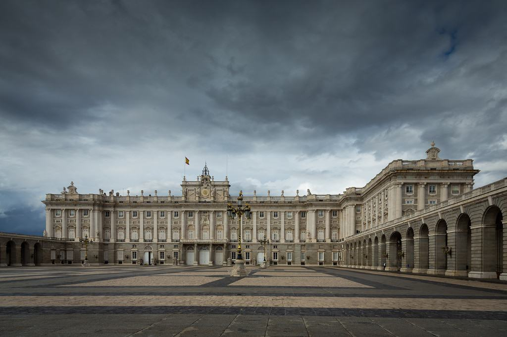 |
| 3. Santiago Bernabéu Stadium | |
| The Santiago Bernabéu Stadium is a football stadium in Madrid, Spain. With a current seating capacity of 81,044, it has been the home stadium of Real Madrid since its completion in 1947. It is the second-largest stadium in Spain and third-largest home to a top-flight European club after Camp Nou and Westfalenstadion.Whether you’re a supporter of the club or not, the truth remains that Real Madrid are Europe’s most successful football team with a record-breaking 11 European Cups to their name. So any fan of the game should consider a pilgrimage to their gargantuan 85,000-seater stadium, where history has been made many times down the seasons. A tour will grant you panoramic views of the stadium, you’ll step inside the dressing room, visit the dugouts and see all sorts of interesting bits including the trophy collection, press room and presidential box | 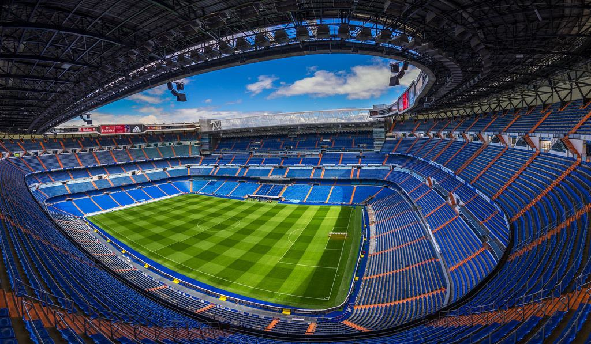 |
| 4. Gran Vía | |
| The Gran Vía street is a street in central Madrid, Spain. It leads from Calle de Alcalá, close to Plaza de Cibeles, to Plaza de España.If you’d like to get a sense of the city, a walk along the Gran Vía is a superb place to start. It’s Madrid’s entertainment, shopping and cultural nerve centre, a buzzing avenue often full of life until dawn.By day it throngs with shoppers stopping by the many malls, high-street stores like H&M and Zara and luxury boutiques. In the evenings there are couples arm-in-arm, stepping out to the cinema or a musical.And after dark the street pulses with many of Madrid’s top nightclubs. Sights to spot as you stroll include the vast Telefónica Building, built in 1928 and an early example of a skyscraper. | 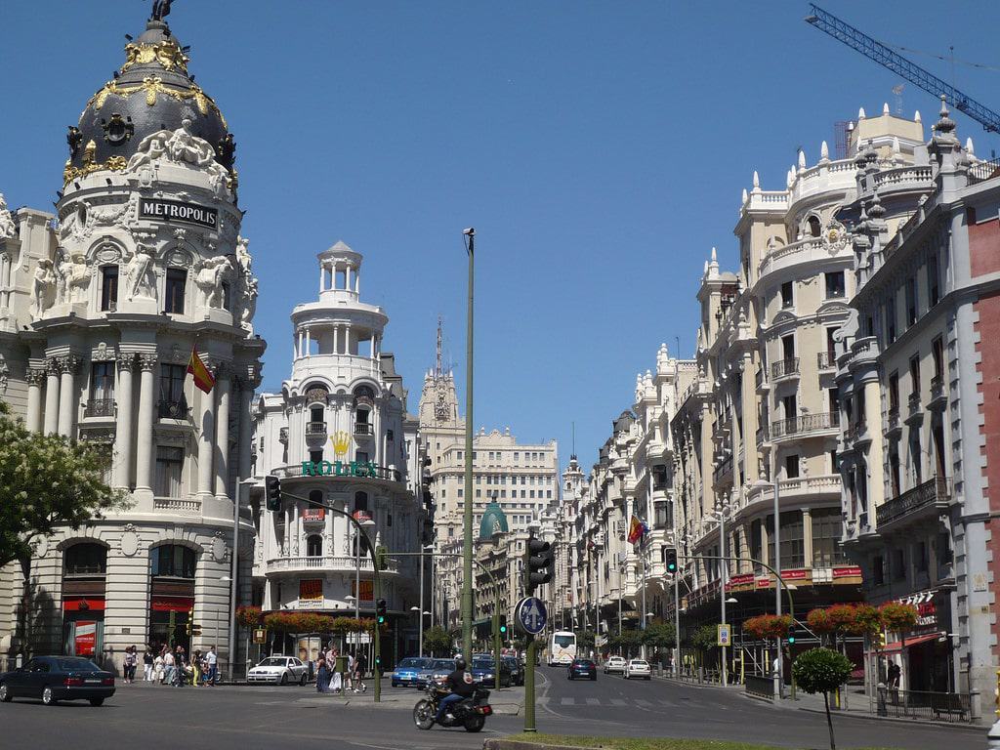 |
| 5. Plaza Mayor | |
| The Plaza Mayor dates back to the 15th century where it was originally called the "Plaza del Arrabal" and was used as the main market of the town. In 1561, the plaza was transferred to the city of Madrid. King Philip II commissioned Classical architect Juan de Herrera to remodel the area..Another of Madrid’s “musts”, Plaza Mayor is a handsome renaissance square, laid out in the early-1600s and completely sequestered by historic three-storey-high residential buildings. There are nine entrances to the square and within the porticoes at the bottom of the buildings are several cafes. Order a coffee (overpriced but necessary because of the location!) at an outdoor table and watch Madrid in action for a few minutes. After that you could wander up to the 400-year-old bronze statue of King Philip III, who was in power at the height of the Spanish empire. | 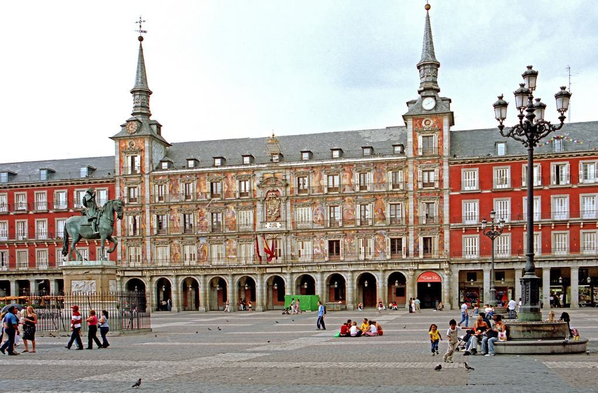 |

| 1. Cocido Madrileño | |
| The most common take on this traditional Spanish stew usually consists of a flavorful broth full of vegetables, chickpeas, chorizo sausage, and pork. The stew simmers for upwards of four hours, creating a blend of heavenly, robust flavors that make for the ideal cure to Madrid’s wintry weather. The typical way to eat cocido madrileño is in two or three courses. Once the chickpeas, meats, and vegetables are finished cooking, cooks separate the broth and use it to make soup with small vermicelli noodles. This steaming soup becomes the first course.The rest of the flavorful ingredients make up the main dish, often in two rounds. The chickpeas and veggies come first, followed by the stewed-to-perfection meat. Some places serve both portions at once, which helps abbreviate the meal a bit. | 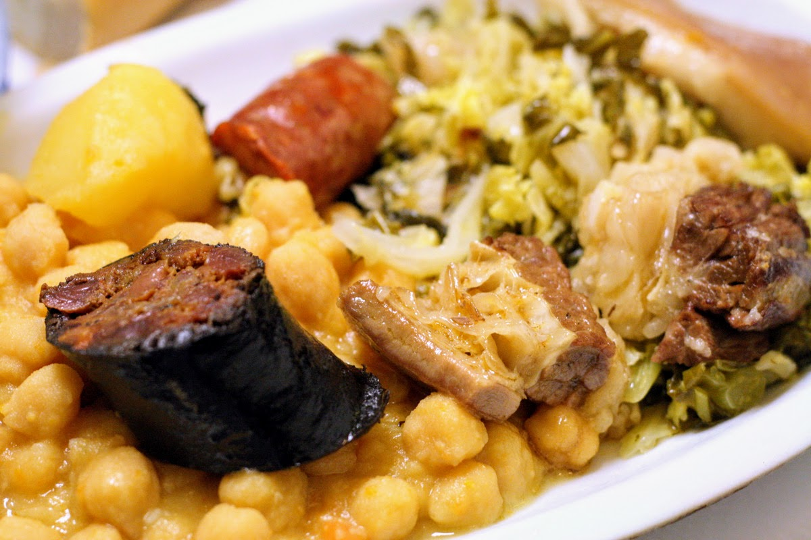 |
| 2. Huevos Rotos | |
| Traditional Spanish cuisine is very meat-and-potatoes. Nowhere is this fact more deliciously evident than in a steaming plate of huevos rotos, which literally translates to “broken eggs.” This typical Madrid dish is a plate of potatoes which are freshly fried in Spanish olive oil and tossed with sea salt. The potatoes are topped with perfect over-easy eggs. Depending on where you go, you’ll either break the yolks with the edge of a crusty piece of bread or your server will break them, often at the table. You can find some of the best huevos rotos in the city at Taberna Los Huevos de Lucio, one of many great places to eat in the La Latina area. Check out our full guide to where to eat huevos rotos in Madrid, or make them at home with the recipe in our first digital cookbook! | 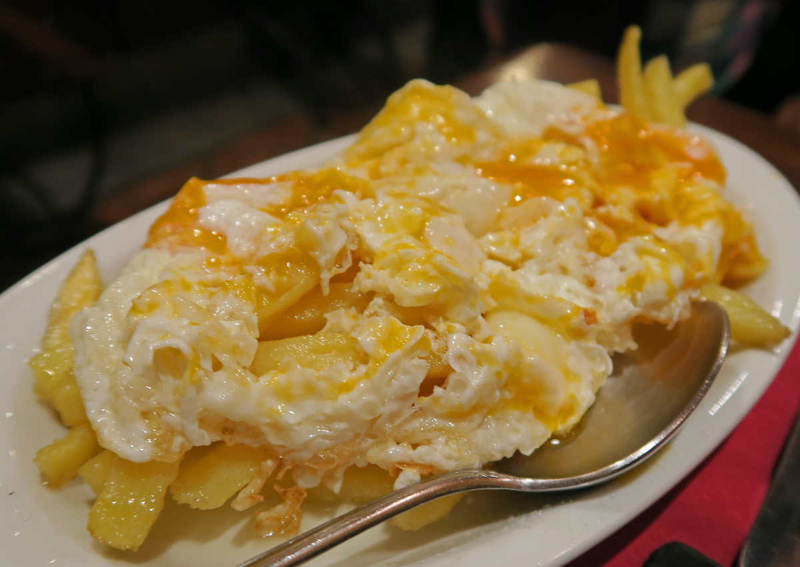 |
| 3. Bocadillo de Calamares | |
| No trip to Madrid is complete without tasting the city’s most famous sandwich: the bocadillo de calamares, or fried squid sandwich. The most basic (and most traditional) bocadillo de calamares consists of fresh, crusty bread loaded with flour-coated, deep-fried rings of squid, and nothing else. Some Spaniards top the two-ingredient creation with tomato and paprika puree or homemade garlic mayonnaise. For the full experience, make sure to wash your bocadillo down with a cold caña of beer. The many side streets around Madrid’s grand Plaza Mayor are home to some of the city’s best calamari sandwich bars. (Yes, you can find great food near tourist attractions!) Our favorite is La Campana. | 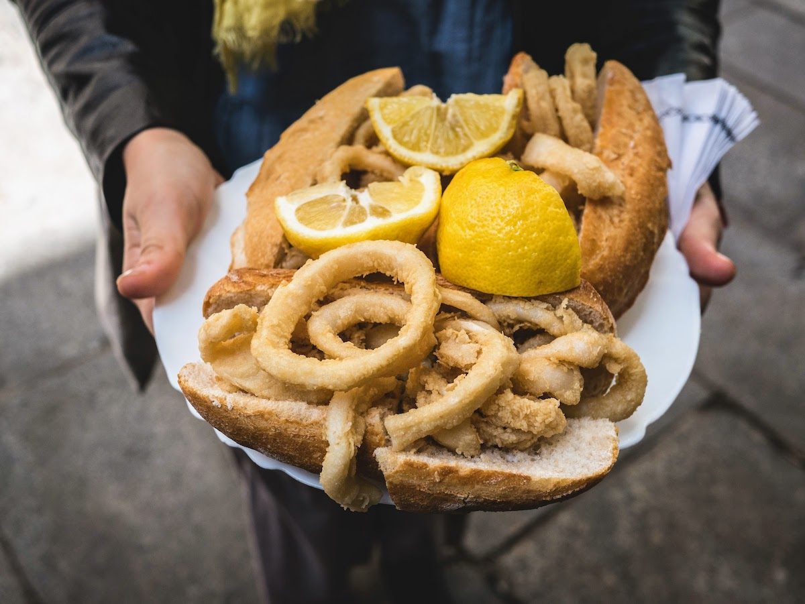 |
| 4. Callos a la Madrileña | |
| Callos is another one of the most typical foods in Madrid during the winter. Normally served in a clay dish, it consists of strips of beef tripe (stomach), chunks of chorizo, and slices of morcilla (blood sausage). Many versions add paprika for flavor, resulting in a reddish-brown color. This smoky, savory stew has been a popular cold-weather dish in Spain’s bars and taverns for hundreds of years. In fact, the first known recipes for callos date back to the 16th century! Today, you can find it in most bars and restaurants throughout the capital city during the winter months. Bowl of tripe stew with pork and chickpeas | 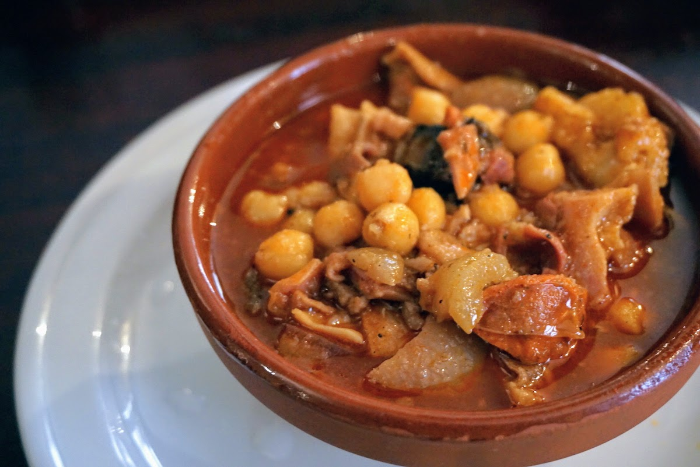 |
| 5. Croquette | |
| A croquette is a type of dumpling consisting of a thick binder combined with a filling, which is breaded and deep-fried, and served as a side dish, a snack, or fast food worldwide. The binder is typically a thick béchamel or brown sauce, mashed potatoes, wheat flour or wheat bread. Main ingredients: Ground meat, shellfish, fish, ham, cheese, mashed potatoes, vegetables, béchamel or brown sauce | 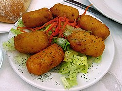 |

| 1. Grab a drink at sala Equis | |
| In a short time, Sala Equis has become wildly popular in Madrid. The 700 m² space is dedicated to film, music and all types of cultural and gastronomic goodness. It's divided into three zones: the terrace at the entrance; the epicentre of the space, Sala Plaza, with its big screen, a bar with a variety of different eats, and an area where you can relax on wooden benches or lounge chairs, or even have a go on the swings; and finally the 55-seat cinema for their film cycles.
Don't miss: The fab Saturday night ambience, and the fun cinema cycles. |
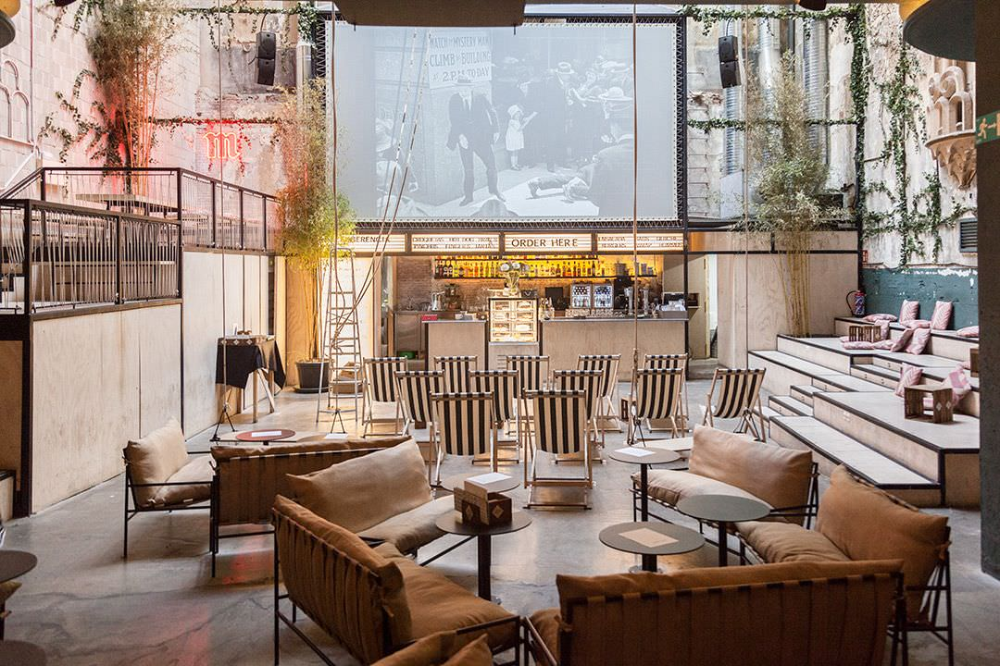 |
| 2. Vallehermoso Market | |
| Another great example of how traditional markets have been reinvented and have blossomed to serve up international cuisine.It’s said that hunger sharpens our ability to create and innovate. And it seems that’s what happened to a group of shopkeepers at the Mercado de Vallehermoso, who, after a nearly two-decade period of decline, decided to give new life to their workplace and opened their doors to restaurants and bars like Prost Chamberí, Graciana and Craft 19. These days, the once-empty stalls are thriving thanks to the Galería de Productores initiative, made up of 22 local suppliers who sell ‘100% authentic | 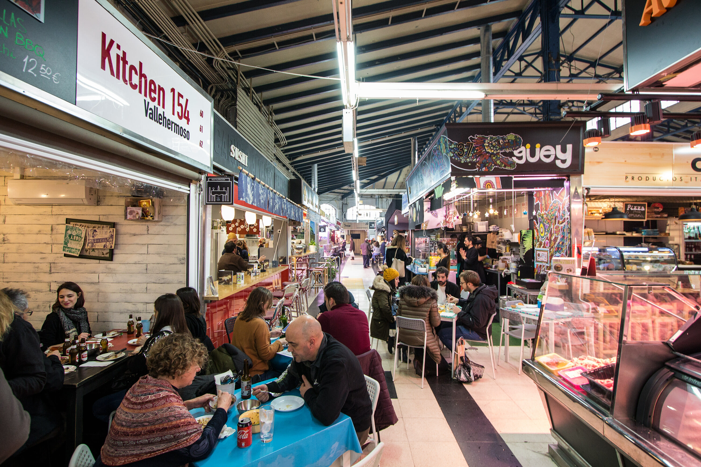 |
| 3. Swing Dance At San Fernando Market | |
| A market where traditional butchers' and fishmongers' stalls live happily alongside those offering international cuisine, and where you can find activities for all ages.t may not be as popular as some of the other markets in Madrid, but it's still a place to discover and enjoy, especially as it's in a neighbourhood as lively as Lavapiés, which embraces the Mercado de San Fernando as one of its most symbolic landmarks. Built after the Spanish Civil War, the market has been modernised over the years, both in appearance and its stock. Today it's a great place to get high-quality produce, discover what its shops have to offer, and relax at one of its bars or cafés. | 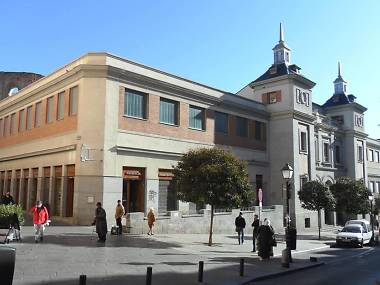 |
| 4. Visit Spain's Old Egyptian temple | |
| The best – and only - Egyptian temple in Spain.You don’t have to travel to Cairo to see Ancient Egyptian artefacts. Strangely enough, Madrid has one too. The Templo de Debod dates back more than 2,200 years and honours the gods Amun and Isis. But wait, the history boys all shout, when did the Egyptians come to Madrid to build a temple? Well, they didn’t. But in 1968 the Egyptian government sent each and every historic brick of this place to Spain as a thank you for helping to preserve monuments that could have been destroyed by the Aswan Dam. Which, in a way, is almost a cool a story as if it had been in Madrid for thousands of years. | 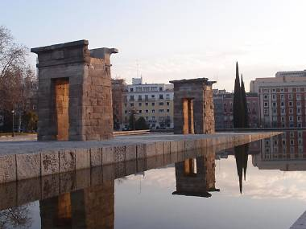 |
| 5. Seee the View From Círculo de Bellas Artes | |
| The Círculo de Bellas Artes is a private, non-profit, cultural organization that was founded in 1880. Its building, located in Madrid, Spain, was declared Bien de Interés Cultural in 1981.A cultural centre in a stunning building. The Círculo de Bellas Artes is the place to be if you love high-quality culture including concerts, plays and a changing schedule of exhibitions. Or, it’s the place to be if you want to take in beautiful vistas across Madrid. Personally, we love doing a bit of both, while making sure never to leave the building without at least a quick trip up to the rooftop terrace. | 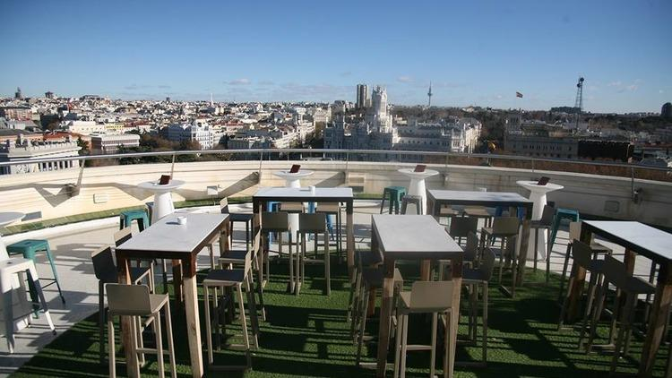 |